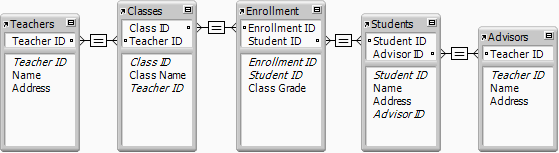
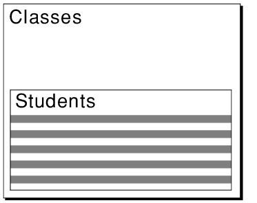

You can place fields from related tables either directly on layouts or in portals that display related records:
•Directly on layouts: Place related fields directly on a layout to display data from the first related record, even when there are more than one related record that match the criteria of the relationship. (The first related record that is displayed is determined by whether the relationship specifies a sort order.)
•In portals: Place related fields within a portal on a layout to display data from all related records that match the criteria of the relationship.
For example, you might do the following on an Invoice layout in an Invoices database:
•Place related fields on the invoice that displays data from the Clients database, such as the client's identification number and contact information. (The match field is Client ID.) There is only one record in the Clients database for each Client ID, so each related field on the invoice displays the data for that client.
•Place a related field on the invoice that displays the most recent value from the Order Date field in the Order History database. (Again, the match field is Client ID.) If the client has placed more than one order, there are multiple records in Order History that match this client's Client ID. By defining a sort order on the Order Date field when you define the relationship, the most recent date displays in the related field when it's placed directly on the layout (not in a portal).
•Place related fields on the invoice that display data about each ordered item, such as Product ID, Product Name, Unit Price, and so on. (The match field is Order ID.) Since in most cases there is more than one product on the invoice (you're displaying more than one related record), you create a portal to hold the related fields. Each row of the portal displays one related record with the related fields you select from the Line Item database.
When you place a related field in a portal that displays related records, FileMaker Pro Advanced uses one of two starting points to evaluate the related data to display: the record in the portal's table, or the record in the layout's table. The starting point is significant because it affects the related data that the field displays.
FileMaker Pro Advanced determines which starting point to use based on the path of relationships between two tables in the relationships graph:
•the layout's table
•the field's table (the table that contains the placed field)
If the path of relationships from the layout's table to the field's table includes the portal's table, the record in the portal's table is the starting point. Otherwise, the record in the layout's table is the starting point.
For example, the following relationships graph shows a school enrollment database. It contains tables for teachers, classes, and students, and an enrollment table to indicate which students are in each class. There is also an advisors table (another occurrence of the teachers table) which assigns a faculty advisor to each student.

Consider the following layout, which displays the enrolled students in a class. The layout's table is Classes, and the portal's table is Students.

The table below describes how FileMaker Pro Advanced determines the starting points for four fields placed in this portal from different tables.
Placed field | Path from | Does path | Starting | Comment |
Name field from | Classes-Enrollment-Students | Yes | Portal's record | The placed field is from the portal's table (a very common occurrence). The field would display an enrolled student in each row of the portal. |
Name field from | Classes-Enrollment- | Yes | Portal's record | The placed field would display each student's advisor in each row of the portal. |
Name from | Classes-Teachers | No | Layout's record | The placed field would repeat the teacher for the class in each row of the portal, not the first related teacher value for each student. |
Class Name from Classes table | Classes | No | Layout's record | The placed field is from the layout's table (an uncommon occurrence). The field would repeat the class name for each row in the portal, which is redundant if the layout includes the Class Name field outside of the portal. |
In addition to fields placed in a portal, FileMaker Pro Advanced uses this method to determine the starting point for other references to fields in portals:
•Value lists: when a value list is defined to include only related values from a field, and a field in a portal is formatted to display this value list. (The starting point determines the values displayed in the value list.)
•Calculations: when scripted calculations refer to fields while a portal is active.
Usually, FileMaker Pro Advanced determines the correct related data to display. However, you can change the starting point by modifying the relationships graph to include other tables and relationships, and then changing the related fields referenced in the portal.